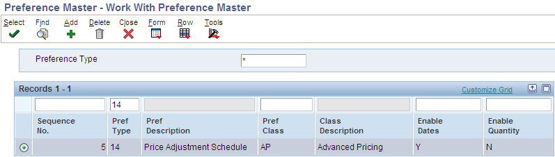

Basic Preference 14 allows the user to assign a specific adjustment schedule to an order, replacing the default schedule from the Customer Billing Instructions. The preference also works when there is no existing schedule in the Customer Billing Instructions. This paper shows the setup and processes required to implement this preference. The preference is available in releases XE and above.
Details for this preference are stored in table F40314 - Preference Profile - Price Adjustment Schedule.
This preference will populate the Adjustment Schedule field (SDASN) in the Sales Order Detail file (F4211), update the Price History File (F4074), and is applied at Sales Order Entry.
Only line level adjustments are supported under this preference – the system is designed to apply the preference to each detail line (F4211). Basket (including Enhanced Basket), Order and Volume level adjustments that are not processed at the time of line entry, and require the order to be repriced using the R42750 (or the interactive form Exit to “Reprice Order”) will pull the schedule from the order header, and are therefore outside of the scope of this preference.
Access the Preference Master (P40070) on menu G4231. Locate Pref Type 14:

Clicking Select on the previous screens takes the user to the P40314 screen, where details of a new preference can be added using the ADD button, or existing preference details can be viewed.
In the example below, details are added for item AL678. It is also possible to make a selection from the hierarchy that is displayed, so that items, customers and their respective groups can be configured. Here, schedule SCH678 is chosen. The Preference Status can be set to either Active (1) or Inactive (2).